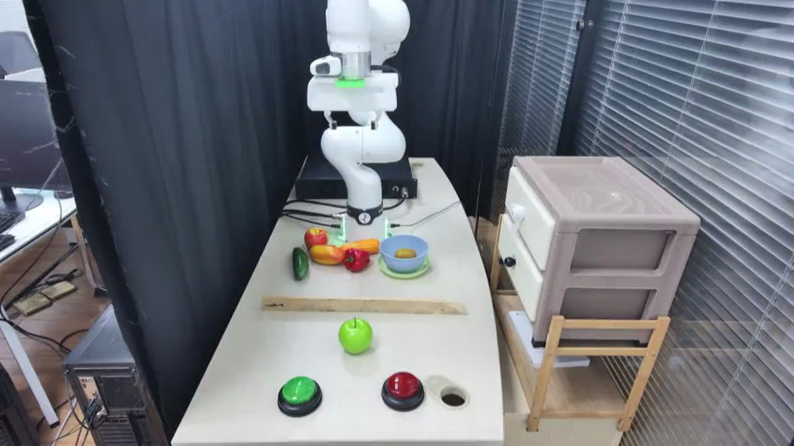

TAVP · 005_franka_reach_and_drag_standard_success
Franka reach and drag standard success

Visual review action_review.json
{
"video_id": "005",
"review_method": "Visual inspection of every second decoded frame across the entire MP4 plus native-resolution transition frames, followed by native initial PNG",
"review_source_video": "/Users/nijiachen/Downloads/Robotvideo/TAVP/005_franka_reach_and_drag_standard_success/original/video.mp4",
"source_frame_count": 1211,
"source_fps": 30.0,
"inspected_frame_stride": 2,
"inspected_sampled_frame_count": 606,
"reviewed_contact_sheets": [
"sheet_001.jpg",
"sheet_002.jpg",
"sheet_003.jpg",
"sheet_004.jpg",
"sheet_005.jpg",
"sheet_006.jpg",
"sheet_007.jpg",
"sheet_008.jpg",
"sheet_009.jpg",
"sheet_010.jpg"
],
"native_detail_frames": [
200,
400,
550,
640,
680,
730,
840,
900,
940,
980,
1000,
1060,
1090,
1110,
1140,
1170,
1210
],
"initial_scene": "Fixed elevated oblique view of a white tabletop. A white articulated robot with a parallel gripper is mounted at the rear. A long pale wooden strip lies left-to-right across the middle, behind a bright green apple. Green and red round buttons on black bases sit near the front edge, with a round tabletop hole to the right. A dark green elongated object and red/orange produce-like objects are grouped near the robot base; a light blue bowl containing a small yellow object rests on a pale green saucer to their right. A beige box-like cabinet stands beside the table on the right, with a small wooden frame in front; dark curtains and window blinds form the background.",
"observed_sequence": [
{
"start_frame": 0,
"end_frame_inclusive": 635,
"action": "The robot slowly reorients its wrist from a raised pose, then extends forward and downward toward the wooden strip, reaching a point right of its center. The apple and strip remain in their starting positions.",
"confidence": "high"
},
{
"start_frame": 636,
"end_frame_inclusive": 945,
"action": "The downward-facing parallel gripper settles around the wooden strip and closes on it. There is a prolonged hold and a small rocking or alignment adjustment of the strip before transport.",
"confidence": "high"
},
{
"start_frame": 946,
"end_frame_inclusive": 1110,
"action": "The robot lifts and angles the gripped strip, then draws it forward toward the camera. The strip contacts the rear of the green apple and moves it toward the table front, into the gap between the buttons and close beside the red button. The strip also appears to nudge the green button assembly slightly.",
"confidence": "high"
},
{
"start_frame": 1111,
"end_frame_inclusive": 1210,
"action": "The robot raises and retracts the wooden strip away from the apple while keeping it gripped. The apple settles in its new forward position between the buttons, near the red button; the strip remains held above the tabletop at the end.",
"confidence": "high"
}
],
"multi_step": false,
"selected_segment": {
"start_frame": 0,
"end_frame_exclusive": 1211,
"reason": "The entire clip is one continuous tool grasp and apple drag, followed by withdrawal with the tool still held. Approach, grasp, transport, and withdrawal are stages of this single action; no second independent subtask begins.",
"terminal_state": "The green apple remains near the front between the buttons, close to the red button. The robot still grips the angled wooden strip above the middle of the table after withdrawing it."
},
"full_sequence_prompt": "The robotic arm grasps the wooden strip and uses it to sweep the green apple into the gap between the green and red buttons. Keep the camera fixed; preserve robot geometry, physically valid joint motion, and normal gripper opening and closing.",
"world_model_prompt": "The robotic arm grasps the wooden strip and uses it to sweep the green apple into the gap between the green and red buttons. Keep the camera fixed; preserve robot geometry, physically valid joint motion, and normal gripper opening and closing.",
"uncertainties": [
"The strip-gripper contact is partly occluded by the gripper housing, though subsequent coupled motion clearly shows the strip is held.",
"The apple moves under contact with the wooden strip; the video does not clearly distinguish pure sliding from slight rolling.",
"The strip appears to shift the green button assembly slightly during the forward sweep; no button press is clearly established."
],
"evidence_frame_indices": [
0,
640,
840,
980,
1060,
1110,
1140,
1210
],
"prompt_provenance": "visually_authored_from_video_and_initial_frame",
"selected_execution_status": "success",
"prompt_protocol": "concise_action_v1",
"review_source_original_video": "005_franka_reach_and_drag_standard_success/original/video.mp4",
"review_source_crop_rectangle": null
}